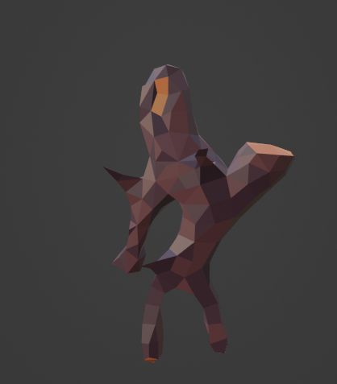

Bullet-Time
I find bullet-time mechanics in games pretty cool so I decided to try and add it to The Tribes. I havent found a way to implement it dynamically into the gameplay but for testing purposes I have key-binded it to c. in Godot you can directly change the speed of the game, this changes a variable called 'delta' which basically makes the game work at the same speed not-dependant of the frame rate. In this case however it is used to slow down the game. unfortunatly you need to use delta in everything that you want to slow down which usually isnt an issue because it is common practice to do so, But because of my amatuer programming skills I didnt so half of the game runs at normal speed and the other half runs at half speed. this mechanic isnt a priority at the moment so it will probably remain as-is until Pre-Alpha v2.
Bullet time is bussin
What a handsome fella 🤗
Minecraft Creeking-aah build 💀
Big man
Just before I release Pre-Alpha v1, I whipped out a crappy monster model and stuck some dookie ai into it. now the monster still has the same ai but looks
very mindful and very demure. A cool mechanic I though of was having a hidden bar that stores how much deforestation you are doing and so the more trees You
cut down the higher change it is for these guys to spawn. I am calling them fiends (fien, fien, fien) and they act as the basic enemy for the game. I am
probably going to add stronger ones that spawn at night and maybe some underwater ones. I think of them as sort of nature guardians that stop people like
you as the player from destroying the forest. If you respect nature then you wont have to deal with these guys too often. I think this is a very interesting
theme compared to most games where the first thing you do is destory every piece of greenery in a 10km radious and install 10 parking lots and 50 macdonalds.
The ai is pretty basic for these guys, they spawn, do a funny little dance and walk towards the player. when they are in range they beging to attack and if it
hits you, then you get damaged. they wont be hard to kill just a little annoying, hehehe.
Marksman Arkus
I want the tribes to be a heavyly story & lore based game and this means actually having a story and lore. I have written down most of the secret lore and will reveal it as i see necesary through these little updates. The first thing I created from the lore is an ancient tribes leader called 'Marksman Arkus'. The Lore goes; Marksman Arkus was the leader of the filum tribe back in the ancient era. Many years later in the present, you are able to find Arkus' tribes remains and enter the filum dungeon. Once completing the dungeon you will be rewarded with the Daikyu, a legendary bow with the ability to slow down time when shooting (totally not botw). This lore currently is still in its early stages so expect it to change. so far i have created the model for arcus. I plan on showing the lore either through still renders with dialouge or actuall cutscenes.

Marksman arkus my beloved ❤️
Additional Notes
You may have noticed in the video that there is some cool hearts in the bottom right, that was going to be the health
but have decided on another method that I will discuss in a later update once its more polished.
Another thing unrelated to the tribes, I was on youtbute and saw a trailer for an upcoming game called "Mortal quest", The
game itself looks like it plays like an old school rpg will survival mechanics and cool bossfights. The art is a bit interesting
but its not finished yet so It will probably change. I recommend you check it out on itch & youtube: Mortal Quest on Itch.io